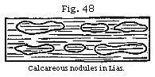
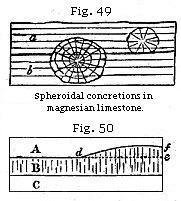
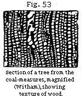

The Student’s Elements of Geology
Chemical and Mechanical Deposits. — Cementing together of Particles. — Hardening by Exposure to Air. — Concretionary Nodules. — Consolidating Effects of Pressure. — Mineralization of Organic Remains. — Impressions and Casts: how formed. — Fossil Wood. — Goppert’s Experiments. — Precipitation of Stony Matter most rapid where Putrefaction is going on. — Sources of Lime and Silex in Solution.
Having spoken in the preceding chapters of the characters of sedimentary formations, both as dependent on the deposition of inorganic matter and the distribution of fossils, I may next treat of the consolidation of stratified rocks, and the petrifaction of imbedded organic remains.
Chemical and Mechanical Deposits.— A distinction has been made by geologists between deposits of a mechanical, and those of a chemical, origin. By the name mechanical are designated beds of mud, sand, or pebbles produced by the action of running water, also accumulations of stones and scoriæ thrown out by a volcano, which have fallen into their present place by the force of gravitation. But the matter which forms a chemical deposit has not been mechanically suspended in water, but in a state of solution until separated by chemical action. In this manner carbonate of lime is occasionally precipitated upon the bottom of lakes in a solid form, as may be well seen in many parts of Italy, where mineral springs abound, and where the calcareous stone, called travertin, is deposited. In these springs the lime is usually held in solution by an excess of carbonic acid, or by heat if it be a hot spring, until the water, on issuing from the earth, cools or loses part of its acid. The calcareous matter then falls down in a solid state, incrusting shells, fragments of wood and leaves, and binding them together.
That similar travertin is formed at some points in the bed of the sea where calcareous springs issue can not be doubted, but as a general rule the quantity of lime, according to Bischoff, spread through the waters of the ocean is very small, the free carbonic acid gas in the same waters being five times as much as is necessary to keep the lime in a fluid state. Carbonate of lime, therefore, can rarely be precipitated at the bottom of the sea by chemical action alone, but
must be produced by vital agency as in the case of coral reefs.
In such reefs, large masses of limestone are formed by the stony skeletons of zoophytes; and these, together with shells, become cemented together by carbonate of lime, part of which is probably furnished to the sea-water by the decomposition of dead corals. Even shells, of which the animals are still living on these reefs, are very commonly found to be incrusted over with a hard coating of limestone.
If sand and pebbles are carried by a river into the sea, and these are bound together immediately by carbonate of lime, the deposit may be described as of a mixed origin, partly chemical, and partly mechanical.
Now, the remarks already made in Chapter II, on the original horizontality of strata are strictly applicable to mechanical deposits, and only partially to those of a mixed nature. Such as are purely chemical may be formed on a very steep slope, or may even incrust the vertical walls of a fissure, and be of equal thickness throughout; but such deposits are of small extent, and for the most part confined to vein-stones.
Consolidation of Strata.—It is chiefly in the case of calcareous rocks that solidification takes place at the time of deposition. But there are many deposits in which a cementing process comes into operation long afterwards. We may sometimes observe, where the water of ferruginous or calcareous springs has flowed through a bed of sand or gravel, that iron or carbonate of lime has been deposited in the interstices between the grains or pebbles, so that in certain places the whole has been bound together into a stone, the same set of strata remaining in other parts loose and incoherent.
Proofs of a similar cementing action are seen in a rock at Kelloway, in Wiltshire. A peculiar band of sandy strata belonging to the group called Oolite by geologists may be traced through several counties, the sand being for the most part loose and unconsolidated, but becoming stony near Kelloway. In this district there are numerous fossil shells which have decomposed, having for the most part left only their casts. The calcareous matter hence derived has evidently served, at some former period, as a cement to the siliceous grains of sand, and thus a solid sandstone has been produced. If we take fragments of many other argillaceous grits, retaining the casts of shells, and plunge them into dilute muriatic or other acid, we see them immediately changed into common sand and mud; the cement of lime, derived from the shells, having been dissolved by the acid.
Traces of impressions and casts are often extremely faint. In some loose sands of recent date we meet with shells in so advanced a stage of decomposition as to crumble into powder when touched. It is clear that water percolating such strata may soon remove the calcareous matter of the shell; and unless circumstances cause the carbonate of lime to be again deposited, the grains of sand will not be cemented together; in which case no memorial of the fossil will remain.
In what manner silex and carbonate of lime may become widely diffused in small quantities through the waters which permeate the earth’s crust will be spoken of presently, when the petrifaction of fossil bodies is considered; but I may remark here that such waters are always passing in the case of thermal springs from hotter to colder parts of the interior of the earth; and, as often as the temperature of the solvent is lowered, mineral matter has a tendency to separate from it and solidify. Thus a stony cement is often supplied to sand, pebbles, or any fragmentary mixture. In some conglomerates, like the pudding-stone of Hertfordshire (a Lower Eocene deposit), pebbles of flint and grains of sand are united by a siliceous cement so firmly, that if a block be fractured, the rent passes as readily through the pebbles as through the cement.
It is probable that many strata became solid at the time when they emerged from the waters in which they were deposited, and when they first formed a part of the dry land. A well-known fact seems to confirm this idea: by far the greater number of the stones used for building and road-making are much softer when first taken from the quarry than after they have been long exposed to the air; and these, when once dried, may afterwards be immersed for any length of time in water without becoming soft again. Hence it is found desirable to shape the stones which are to be used in architecture while they are yet soft and wet, and while they contain their “quarry-water,” as it is called; also to break up stone intended for roads when soft, and then leave it to dry in the air for months that it may harden. Such induration may perhaps be accounted for by supposing the water, which penetrates the minutest pores of rocks, to deposit, on evaporation, carbonate of lime, iron, silex, and other minerals previously held in solution, and thereby to fill up the pores partially. These particles, on crystallising, would not only be themselves deprived of freedom of motion, but would also bind together other portions of the rock which before were loosely aggregated. On the same principle wet sand and mud become as hard as stone when
frozen; because one ingredient of the mass, namely, the water, has crystallised, so as to hold firmly together all the separate particles of which the loose mud and sand were composed.
Dr. MacCulloch mentions a sandstone in Skye, which may be moulded like dough when first found; and some simple minerals, which are rigid and as hard as glass in our cabinets, are often flexible and soft in their native beds: this is the case with asbestos, sahlite, tremolite, and chalcedony, and it is reported also to happen in the case of the beryl.*
The marl recently deposited at the bottom of Lake Superior, in North America, is soft, and often filled with fresh-water shells; but if a piece be taken up and dried, it becomes so hard that it can only be broken by a smart blow of the hammer. If the lake, therefore, was drained, such a deposit would be found to consist of strata of marlstone, like that observed in many ancient European formations, and, like them, containing fresh-water shells.
Concretionary Structure.—It is probable that some of the heterogeneous materials which rivers transport to the sea may at once set under water, like the artificial mixture called pozzolana, which consists of fine volcanic sand charged with about twenty per cent of oxide of iron, and the addition of a small quantity of lime. This substance hardens, and becomes a solid stone in water, and was used by the Romans in constructing the foundations of buildings in the sea. Consolidation in such cases is brought about by the action of chemical affinity on finely comminuted matter previously suspended in water. After deposition similar particles seem often to exert a mutual attraction on each other, and congregate together in particular spots, forming lumps, nodules, and concretions. Thus in many argillaceous deposits there are calcareous balls, or spherical concretions, ranged in layers parallel to the general stratification; an arrangement which took place after the shale or marl had been thrown down in successive laminæ; for these laminæ are often traceable through the concretions, remaining parallel to those of the surrounding unconsolidated rock. (See Fig. 48.) Such nodules of limestone have often a shell or other foreign body in the centre.
Among the most remarkable examples of concretionary structure are those described by Professor Sedgwick as
* Dr. MacCulloch, Syst. of Geol., vol. i, p. 123.
abounding in the magnesian limestone of the north of England. The spherical balls are of various sizes, from that of a pea to a diameter of several feet, and they have both a concentric and radiated structure, while at the same time the laminæ of original deposition pass uninterruptedly through them. In some cliffs this limestone resembles a great irregular pile of cannon-balls. Some of the globular masses have their centre in one stratum, while a portion of their exterior passes through to the stratum above or below. Thus the larger spheroid in the section (Fig. 49) passes from the stratum b upward into a. In this instance we must suppose the deposition of a series of minor layers, first forming the stratum b, and afterwards the incumbent stratum a; then a movement of the particles took place, and the carbonates of lime and magnesia separated from the more impure and mixed matter forming the still unconsolidated parts of the stratum. Crystallisation, beginning at the centre, must have gone on forming concentric coats around the original nucleus without interfering with the laminated structure of the rock.
When the particles of rocks have been thus rearranged by chemical forces, it is sometimes difficult or impossible to ascertain whether certain lines of division are due to original deposition or to the subsequent aggregation of several particles. Thus suppose three strata of grit, A, B, C, are charged unequally with calcareous matter, and that B is the most calcareous. If consolidation takes place in B, the concretionary action may spread upward into a part of A, where the carbonate of lime is more abundant than in the rest; so that a mass, d e f, forming a portion of the superior stratum, becomes united with B into one solid mass of stone. The original line of division, d e, being thus effaced, the line d f would generally be considered as the surface of the bed B, though not strictly a true plane of stratification.
Pressure and Heat.—When sand and mud sink to the bottom of a deep sea, the particles are not pressed down by the enormous weight of the incumbent ocean; for the water, which becomes mingled with the sand and mud, resists pressure with a force equal to that of the column of fluid above. The same happens in regard to organic remains which are
filled with water under great pressure as they sink, otherwise they would be immediately crushed to pieces and flattened. Nevertheless, if the materials of a stratum remain in a yielding state, and do not set or solidify, they will be gradually squeezed down by the weight of other materials successively heaped upon them, just as soft clay or loose sand on which a house is built may give way. By such downward pressure particles of clay, sand, and marl may become packed into a smaller space, and be made to cohere together permanently.
Analogous effects of condensation may arise when the solid parts of the earth’s crust are forced in various directions by those mechanical movements hereafter to be described, by which strata have been bent, broken, and raised above the level of the sea. Rocks of more yielding materials must often have been forced against others previously consolidated, and may thus by compression have acquired a new structure. A recent discovery may help us to comprehend how fine sediment derived from the detritus of rocks may be solidified by mere pressure. The graphite or "black lead” of commerce having become very scarce, Mr. Brockedon contrived a method by which the dust of the purer portions of the mineral found in Borrowdale might be recomposed into a mass as dense and compact as native graphite. The powder of graphite is first carefully prepared and freed from air, and placed under a powerful press on a strong steel die, with air-tight fittings. It is then struck several blows, each of a power of 1000 tons; after which operation the powder is so perfectly solidified that it can be cut for pencils, and exhibits when broken the same texture as native graphite.
But the action of heat at various depths in the earth is probably the most powerful of all causes in hardening sedimentary strata. To this subject I shall refer again when treating of the metamorphic rocks, and of the slaty and jointed structure.
Mineralisation of Organic Remains.—The changes which fossil organic bodies have undergone since they were first imbedded in rocks, throw much light on the consolidation of strata. Fossil shells in some modern deposits have been scarcely altered in the course of centuries, having simply lost a part of their animal matter. But in other cases the shell has disappeared, and left an impression only of its exterior, or, secondly, a cast of its interior form, or, thirdly, a cast of the shell itself, the original matter of which has been removed. These different forms of fossilisation may easily
be understood if we examine the mud recently thrown out from a pond or canal in which there are shells. If the mud be argillaceous, it acquires consistency on drying, and on breaking open a portion of it we find that each shell has left impressions of its external form. If we then remove the shell itself, we find within a solid nucleus of clay, having the form of the interior of the shell. This form is often very different from that of the outer shell. Thus a cast such as a, Fig. 51, commonly called a fossil screw, would never be suspected by an inexperienced conchologist to be the internal shape of the fossil univalve, b, Fig. 51. Nor should we have imagined at first sight that the shell a and the cast b, Fig. 52, belong to one and the same fossil. The reader will observe, in the last-mentioned figure (b, Fig. 52), that an empty space shaded dark, which the shell itself once occupied, now intervenes between the enveloping stone and the cast of the smooth interior of the whorls. In such cases the shell has been dissolved and the component particles removed by water percolating the rock. If the nucleus were taken out, a hollow mould would remain, on which the external form of the shell with its tubercles and striæ, as seen in a, Fig. 52, would be seen embossed. Now if the space alluded to between the nucleus and the impression, instead of being left empty, has been filled up with calcareous spar, flint, pyrites, or other mineral, we then obtain from the mould an exact cast both of the external and internal form of the original shell. In this manner silicified casts of shells have been formed; and if the mud or sand of the nucleus happen to be incoherent, or soluble in acid, we can then procure in flint an empty shell, which in shape is the exact counterpart of the original. This cast may be compared to a bronze statue, representing merely the superficial form,
and not the internal organisation; but there is another description of petrifaction by no means uncommon, and of a much more wonderful kind, which may be compared to certain anatomical models in wax, where not only the outward forms and features, but the nerves, blood-vessels, and other internal organs are also shown. Thus we find corals, originally calcareous, in which not only the general shape, but also the minute and complicated internal organisation is retained in flint.
Such a process of petrifaction is still more remarkably exhibited in fossil wood, in which we often perceive not only the rings of annual growth, but all the minute vessels and medullary rays. Many of the minute cells and fibres of plants, and even those spiral vessels which in the living vegetable can only be discovered by the microscope, are preserved. Among many instances, I may mention a fossil tree, seventy-two feet in length, found at Gosforth, near Newcastle, in sandstone strata associated with coal. By cutting a transverse slice so thin as to transmit light, and magnifying it about fifty-five times, the texture, as seen in Fig. 53, is exhibited. A texture equally minute and complicated has been observed in the wood of large trunks of fossil trees found in the Craigleith quarry near Edinburgh, where the stone was not in the slightest degree siliceous, but consisted chiefly of carbonate of lime, with oxide of iron, alumina, and carbon. The parallel rows of vessels here seen are the rings of annual growth, but in one part they are imperfectly preserved, the wood having probably decayed before the mineralising matter had penetrated to that portion of the tree.
In attempting to explain the process of petrifaction in such cases, we may first assume that strata are very generally permeated by water charged with minute portions of calcareous, siliceous, and other earths in solution. In what manner they become so impregnated will be afterwards considered. If an organic substance is exposed in the open air to the action of the sun and rain, it will in time putrefy, or be dissolved into its component elements, consisting usually of oxygen, hydrogen, nitrogen, and carbon. These will readily be absorbed by the atmosphere or be washed away by rain, so that all vestiges of the dead animal or plant disappear. But if the same substances be submerged in water, they decompose more gradually; and if buried in earth, still more
slowly; as in the familiar example of wooden piles or other buried timber. Now, if as fast as each particle is set free by putrefaction in a fluid or gaseous state, a particle equally minute of carbonate of lime, flint, or other mineral, is at hand ready to be precipitated, we may imagine this inorganic matter to take the place just before left unoccupied by the organic molecule. In this manner a cast of the interior of certain vessels may first be taken, and afterwards the more solid walls of the same may decay and suffer a like transmutation. Yet when the whole is lapidified, it may not form one homogeneous mass of stone or metal. Some of the original ligneous, osseous, or other organic elements may remain mingled in certain parts, or the lapidifying substance itself may be differently coloured at different times, or so crystallised as to reflect light differently, and thus the texture of the original body may be faithfully exhibited.
The student may perhaps ask whether, on chemical principles, we have any ground to expect that mineral matter will be thrown down precisely in those spots where organic decomposition is in progress? The following curious experiments may serve to illustrate this point: Professor Goppert of Breslau, with a view of imitating the natural process of petrifaction, steeped a variety of animal and vegetable substances in waters, some holding siliceous, others calcareous, others metallic matter in solution. He found that in the period of a few weeks, or sometimes even days, the organic bodies thus immersed were mineralised to a certain extent. Thus, for example, thin vertical slices of deal, taken from the Scotch fir (Pinus sylvestris), were immersed in a moderately strong solution of sulphate of iron. When they had been thoroughly soaked in the liquid for several days they were dried and exposed to a red-heat until the vegetable matter was burnt up and nothing remained but an oxide of iron, which was found to have taken the form of the deal so exactly that casts even of the dotted vessels peculiar to this family of plants were distinctly visible under the microscope.
The late Dr. Turner observes, that when mineral matter is in a “ nascent state,” that is to say, just liberated from a previous state of chemical combination, it is most ready to unite with other matter, and form a new chemical compound. Probably the particles or atoms just set free are of extreme minuteness, and therefore move more freely, and are more ready to obey any impulse of chemical affinity. Whatever be the cause, it clearly follows, as before stated, that where organic matter newly imbedded in sediment is decomposing, there will chemical changes take place most actively.
An analysis was lately made of the water which was flowing off from the rich mud deposited by the Hooghly River in the Delta of the Ganges after the annual inundation. This water was found to be highly charged with carbonic acid holding lime in solution.* Now if newly-deposited mud is thus proved to be permeated by mineral matter in a state of solution, it is not difficult to perceive that decomposing organic bodies, naturally imbedded in sediment, may as readily become petrified as the substances artificially immersed by Professor Goppert in various fluid mixtures.
It is well known that the waters of all springs are more or less charged with earthy, alkaline, or metallic ingredients derived from the rocks and mineral veins through which they percolate. Silex is especially abundant in hot springs, and carbonate of lime is almost always present in greater or less quantity. The materials for the petrifaction of organic remains are, therefore, usually at hand in a state of chemical solution wherever organic remains are imbedded in new strata.
* Piddington, Asiat. Research., vol. xviii, p. 226.